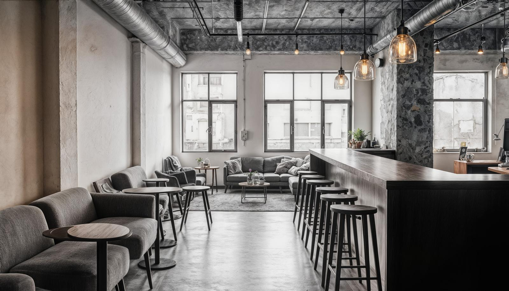
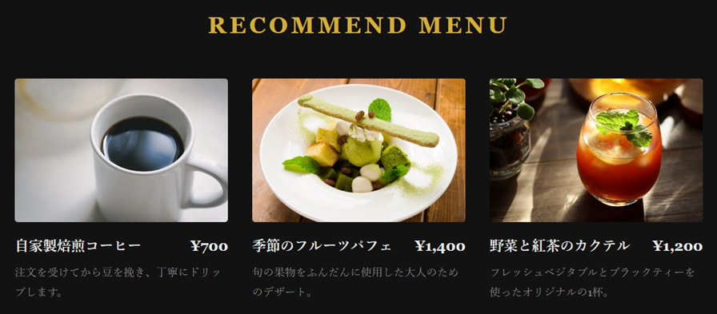
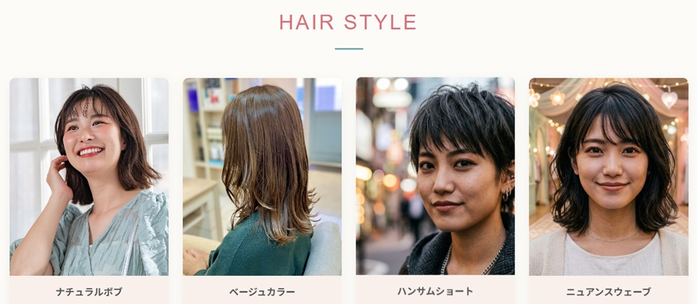

制作実績一覧（カードをクリックすると詳細が表示されます）

落ち着いた雰囲気を伝えるカフェのブランドサイト。
予約動線を意識したミニマルで洗練されたサロンサイト。

ターゲット: 男女問わず落ち着いた空間を求める層
担当範囲: デザイン / コーディング
使用技術: HTML5, CSS3, JavaScript
工夫した点: 店舗のこだわりが視覚的に伝わるよう高解像度な写真を大胆に配置。スマートフォンからでもメニュー確認とWEB予約がシームレスに行えるUI設計に配慮しました。

ターゲット: トレンドに感度の高い若年層〜30代の女性
工夫した点: 白を基調としたミニマルなデザインで清潔感を演出。モバイル表示時には画面下に「WEB予約」ボタンを追従固定させ、コンバージョン率を高める工夫をしています。